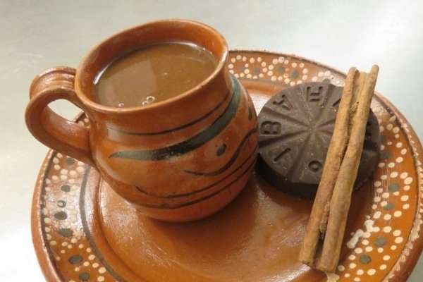

Champurrado

Descripción
Para estas fiestas de día de muertos o en las posadas navideñas prepara
este rico champurrado. La clásica bebida hecha a base de masa de maíz y
chocolate de mesa que seguro te encantará.
Ingredientes
- 2 litros de agua
- 2 piloncillos
- 1 raja de canela
- 4 tabletas de chocolate, de mesa
- 250g de masa de maíz
Preparación
-
Hierve el agua con el piloncillo y la canela. Cocina hasta que se
disuelva el piloncillo.
-
Agrega el chocolate y deja que se disuelva. Moviendo de vez en cuando.
-
En un bowl, disuelve la masa con agua conforme vaya pidiendo la masa.
-
Agrega la masa poco a poco y mueve. Cocina hasta que la masa esté cocida
y se logre una consistencia espesa.